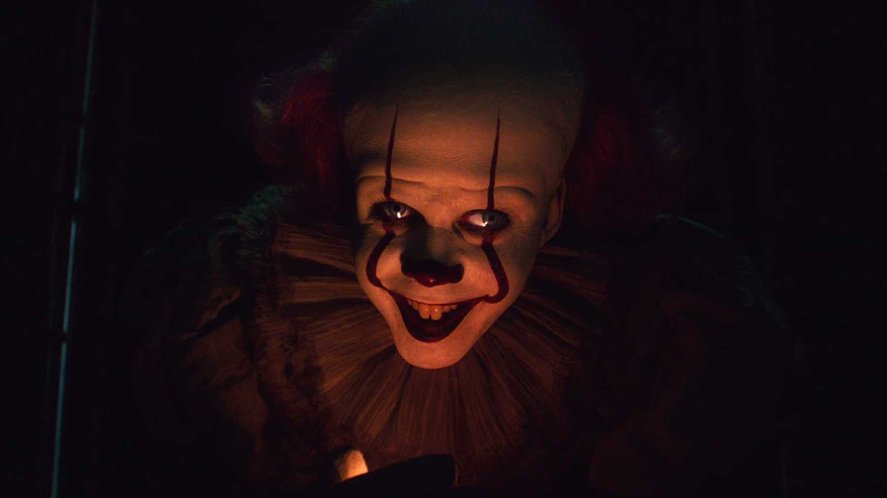

«Воно Частина друга» (англ. It: Chapter Two) — американський фільм жахів, продовження фільму «Воно. Частина перша» 2017 року. Обидва фільми є адаптаціями частин однойменного роману 1986 року Стівена Кінга, та зняті режисером Андресом Мускетті. Ще в лютому 2016 року розпочалися переговори про знімання другої частини[джерело?]. 25 вересня 2017 року New Line Cinema та Warner Bros. Pictures оголосили, що продовження вийде у кінопрокат 6 вересня 2019 року[2]. Тоді ж стало відомо, що сценарій писатиме Ґері Доберман, а фільм зніматиме Андрес Мускетті[3]. Основні зйомки фільму почалися 19 червня 2018 року на базі «Pinewood Toronto Studios» і в локаціях канадської провінції Онтаріо (Порт Хоуп, Ошава, Торонто) та завершено 31 жовтня 2018 року[джерело?]. В Україні прем'єра відбулася 5 вересня 2019 року.[4] Події фільму розгортаються через двадцять сім років після знайомства «Клубу невдах» з істотою-людоїдом Пеннівайзом. Здавалося б, все добре, вони дорослі і живуть своїм життям, але несподіваний телефонний дзвінок змушує їх знову об'єднатися, щоби продовжити боротьбу з Пеннівайзом.
Через 27 років після подій першої частини в містечку Деррі, штат Мен, ввечері в парку розваг на фестивалі «Дні Каналу» два гея — Адріан Меллон і його хлопець Дон Хагарті нарвалися на банду гомофобів. Закохану пару жорстоко б'ють, в Адріана скидають з мосту в річку. Потім бандити тікають, Дон біжить на допомогу Адріану та бачить незнайомця, схожого на клоуна, котрий витягує його друга на інший берег. Там незнайомець відкушує від нього шматок, Адріан Меллон в муках помирає. Невідомо звідки з'являються тисячі червоних повітряних кульок, що летять по нічному небу. Майк Генлон, сидячи в бібліотеці, дізнається по радіо про це та поспішає до місця події. Оглядаючи місце вбивства, він бачить на одному з кущів залишки кульки та напис, зроблений кров'ю: «Повертайтеся додому». Зрозумівши, що «Воно» повернулося, Майк телефонує іншим членам «Клубу невдах» — Біллу, Бену, Беверлі, Річі, Едді і Стену і просить їх повернутися назад в Деррі. Його друзі на той час давно роз'їхалися по США, і кожен живе своїм життям: Білл став письменником і написав сценарії для багатьох кінофільмів, Едді — менеджер із ризиків, одружився з жінкою, як дві краплі води схожою на його сувору матір, Річі став ведучим комедійного шоу, Бен — видатним архітектором, Беверлі — модним дизайнером, одружена з чоловіком, настільки ж жорстоким, як і її батько, Стенлі став бізнесменом. Всі вже забули про своє дитинство і стурбовані дзвінками, але погоджуються повернутися, за винятком Стена, який несподівано здійснює самогубство.
Решта учасників возз'єднуються в місцевому ресторані, спочатку радіючи і згадуючи минуле. Потім ідилію перериває розповідь Майка про низку вбивств, що сталися кілька днів тому. В цей момент з їжі вилазять комахи у вигляді відрубаних кінцівок і нападають на «невдах». Хлопці розуміють, що за цим стоїть «Воно», котрого вони не здолали остаточно в дитинстві. Пізніше, покинувши ресторан, вони дізнаються про самогубство Стена. Всі збираються виїхати, крім Білла, якого Майк вмовляє залишитися і вислухати його.
Зі флешбеків з'ясовується, що Генрі Бауерс вижив після падіння в колодязь і відправився додому, де чергував натовп поліцейських, вивозячи мертвого батька Генрі. Побачивши повернення додому Бауерса-молодшого місцеві копи заарештували його за вбивство батька. Тепер, перебуваючи в психіатричній лікарні, Генрі бачить червону кульку, яку бачив 27 років тому, і влаштовує істерику, через що його відправляють сидіти в окрему палату. Там з-під ліжка вилазить «Воно» в подобі зогнилого трупу, в якому Бауерс впізнає свого давнього друга — Патріка Гокстеттера. Мрець повертає Генрі його ніж. Вночі, убивши санітарів, Генрі тікає з лікарні та їде разом з Пеннівайзом назад в Деррі.
В цей час Майк привозить Білла в бібліотеку і розповідає, як він зустрівся з індіанським племенем, яке показало йому ритуал Чудь, здатний знищити «Воно» раз і назавжди. Інша частина компанії збирає речі в готелі. Бен знає, що Беверлі щось від них приховує і просить її розповісти. Дівчина зізнається, що бачила як помре Стенлі і як в майбутньому помруть інші, якщо не зупинити істоту в цьому циклі її активності.
З великим зусиллям хлопці залишаються в Деррі та беруться до підготовки ритуалу. Щоб ритуал спрацював, кожен з «невдах» повинен мати артефакт зі свого минулого, який слід помістити в стародавню посудину. Беверлі йде в свій старий будинок, де тепер живе літня бабуся місіс Керш, і знаходить любовний лист, написаний Беном для неї, хоча вона все ще думає, що його написав Білл. В результаті на дівчину нападає Пеннівайз у подобі бабусі, а потім в подобі батька. Їй все ж вдається врятуватися, зрештою вона бачить, що будинок її давно покинутий. Річі вештається по місту і приходить в те місце, де проводив в дитинстві весь вільний час — зал аркадних автоматів. Тепер приміщення занедбане, Річі знаходить там залишений в дитинстві жетон для ігрових автоматів. Бен іде в середню школу і так стикається з клоуном, який мучить його старими кошмарами. Білл вирішує до свого старого дому і в дренажному тунелі, де був убитий його брат Джорджі, находить свій паперовий кораблик. Потім він зустрічає хлопчика на ім'я Дін, який тепер живе в будинку Білла. Дін каже, що часто чує голоси зі зливу у ванній. Білл радить хлопчикові і його сім'ї виїжджати з міста. Едді тим часом йде в місцеву аптеку і замовляє інгалятор. Він уже збирався йти, як раптом чує крики своєї мами. Він йде до підвалу, де на нього нападає прокажений і вимазує огидним брудом.
Білл в готелі бачить скейтборд, як у Діна, з посланням від «Воно», з якого випливає, що Пеннівайз намірився вбити хлопчика. Білл біжить у парк розваг, куди хлопчик якраз збирався. Решта його друзів налякані зустрічами з клоуном, і Річі вирішує поїхати геть. Едді йде у ванну відмивати шкіру від бруду «прокаженого», де на нього нападає Генрі Бауерс і ранить його ножем в щоку. Потім Генрі їде в бібліотеку і нападає там на Майка, але вбиває Річі, котрий саме встиг на допомогу. Білл тим часом бігає по парку розваг, намагаючись попередити Діна, але спізнюється, і хлопчик помирає в страшних муках. Вражений, він повертається в будинок на Нейболт-стріт, де в дитинстві «невдахи» пережили свої кошмари, щоби вбити «Воно». Решта «невдах» погоджуються вирушити за ним.
Зайшовши в будинок, кожен з них заново стикається зі своїми вже дорослими кошмарами. Друзі спускаються в колодязь і починають ритуал, коли перед ними постає Пеннівайз в образі гігантського павука і розповідає, що Майк відпочатку знав, що ритуал не спрацює. Друзі, втім, здогадуються, що це чергова хитрість Пеннівайза. В ході битви ціною життя Едді Каспбрака їм вдається вбити «Воно» раз і назавжди. Потім вони вибігають з дому, який розвалюється разом з лігвом Пеннівайза.
Вцілілі «невдахи» повертаються на кар'єр, де вони колись плавали разом. Беверлі усвідомлює, що це Бен написав любовний лист і цілує його, пізніше вони починають зустрічатися. Річі повертається на місток, де він колись вирізав свої ініціали і вирізає ім'я Едді. Майк вирішує переїхати з Деррі до Флориди для нового життя. Всі «невдахи» отримують посмертний лист від Стена, в якому той пояснює, що вважав себе перешкодою, його друзі могли би перемогти «Воно», якби стали хоробрими без нього.
| Жанр | фільм жахів |
|---|---|
| Дата випуску | 6 вересня 2019 року |
| Обмеження по віку | 18+ |
| Режисер | Стівен Кінг |